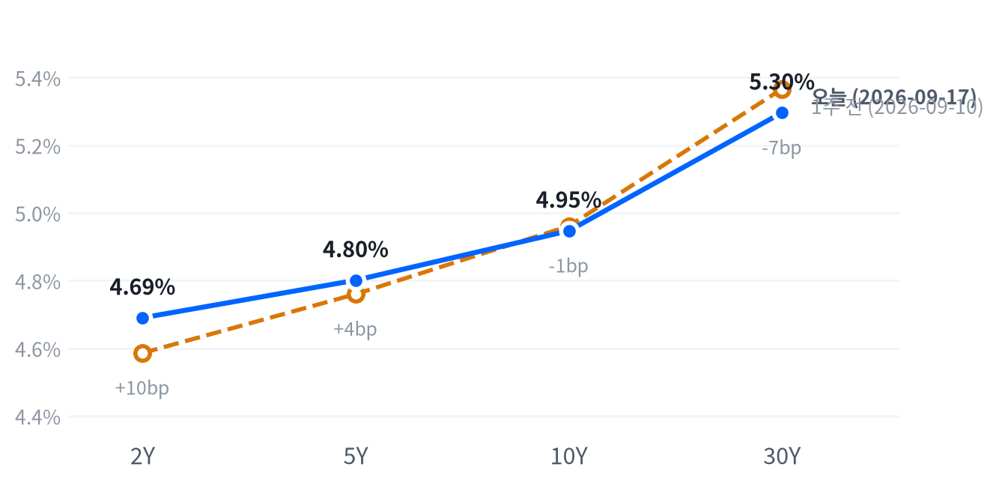

US MARKET BRIEF
FOMC 다음날 안도 랠리 — 기술주가 나스닥 1.69% 끌어올렸다
미국 2026년 9월 17일 거래일 · 한국 9월 18일 발행. 가격은 일간 종가, 장중 경로는 30분봉 기준.
전일 FOMC 뒤의 급락을 하루 만에 되돌린 세션이었습니다. 나스닥이 1.69%, S&P 500이 1.14% 올랐고 기술 섹터 하나가 지수 상승분의 대부분을 만들었죠.
국채금리는 전 만기에서 내렸고, 10년물은 4.947%까지 내려왔습니다. 주식과 금리가 같은 날 반대로 움직여 준 덕분에 전날 밀렸던 자리가 거의 복구됐네요.
전략 코멘트
하루를 지배한 것은 유가와 금리의 동반 하락이었습니다. 브렌트유가 배럴당 104달러대로 내려오자 장기금리가 따라 내렸고, 그 자리를 기술주가 받아 나스닥을 1.69% 끌어올렸죠. 전날 매파적으로 읽혔던 워시 의장의 회견 톤은 하루 만에 가격에서 상당 부분 지워졌습니다.
랠리가 어디에 닿느냐가 핵심입니다. 금리가 내린 경로는 정책 기대가 아니라 유가였고, 그렇다면 이번 되돌림은 연준이 물러섰다는 신호가 아니라 물가 재료가 한 겹 가벼워졌다는 신호로 읽는 편이 안전하죠. 그래서 지수는 올랐는데도 평균적인 종목은 지수를 따라가지 못했고, 러셀2000은 장 초반 고점에서 밀려 저점에서 끝났습니다.
우리는 다음 세션까지 전 자산군 포지션을 유지하되 에너지 한 칸만 중립으로 줄입니다. 사전에 걸어 둔 축소 조건이 실제로 충족됐기 때문이고, 나머지 여섯 자산군은 트리거가 모두 문턱 안쪽이라 손대지 않았습니다. 하루짜리 반등에 등급을 붙이지 않는다는 원칙은 오늘도 그대로예요.
이 판단을 접는 조건은 둘입니다. 유가가 되돌아 5일 수익률이 다시 8%를 넘으면 에너지 축소는 성급했던 것이 되고, 30년물이 5.05% 아래로 내려오면 채권 쪽 판단을 다시 엽니다.
오늘의 장
아시아는 닛케이 +0.69%, 항셍 +0.19%, 상해종합 +0.71%로 모두 올랐습니다. 유럽도 DAX +0.53%, FTSE100 +0.29%, 유로스톡스50 +0.48%로 같은 방향이었죠. 두 지역 모두 미국 장의 상승을 앞서 준비해 둔 셈이고, 지역 안에서 갈린 지수도 없었죠. 미국이 그 흐름을 그대로 이어받아 폭만 키웠습니다.
| 지수 | 종가 | 등락 | 기준일 |
|---|---|---|---|
| 닛케이 | 63,923.00 | +0.69% | 2026-09-16 |
| 항셍 | 24,713.78 | +0.19% | 2026-09-16 |
| 상해종합 | 3,891.60 | +0.71% | 2026-09-16 |
| DAX | 25,537.75 | +0.53% | 2026-09-16 |
| FTSE100 | 10,688.50 | +0.29% | 2026-09-16 |
| 유로스톡스50 | 6,266.50 | +0.48% | 2026-09-16 |
| VIX | 15.44 | -12.82% | 2026-09-17 |
야간 선물은 08:30 ET에 하루 고점을 찍었습니다. S&P 선물이 7,722, 나스닥 선물이 29,753까지 올랐고 두 계약 모두 16:00 ET에 저점을 만들었죠. 현물은 그 기세를 받아 대형주 지수가 전일 종가보다 1.05%, 나스닥이 1.52% 높은 자리에서 출발했습니다.
참여도는 「소수가 끌어올림」이었습니다. 지수를 동일가중으로 계산하면 시총가중보다 0.65%포인트 뒤졌는데, 평균적인 종목이 지수를 못 따라갔다는 뜻이에요. 마감 위치도 그 결을 그대로 보여 줍니다. 대형주 지수가 당일 고저 폭의 72, 나스닥이 73 자리에서 끝나 둘 다 중단권이었고, 러셀2000은 0으로 저점에서 마감했죠.
마감 위치는 당일 고저 폭에서 종가가 어디에 놓였는지를 0~100으로 옮긴 값이다. 최근 2,259거래일로 다시 잰 경계는 고점권 84.6, 저점권 25.1이다.
무엇이 무엇을 움직였는지는 비교적 선명한 날이었습니다. AP 통신은 유가 하락과 국채금리 완화가 겹쳐 전일 낙폭이 되돌려졌다고 전하면서, 브렌트유가 주 초반 배럴당 110달러 근처까지 올랐다가 104.82달러로 내려왔다고 설명했죠. 같은 기사는 AI 관련주가 상승을 주도했다며 엔비디아 +2.5%, AMD +6.4%를 예로 들었습니다. 시간외 재료는 따로 확인되지 않았습니다.
어제와 오늘을 붙여 보면 이틀치 그림이 나옵니다. 9월 16일에는 다우가 1.21% 밀리며 지수가 함께 내려갔는데, 오늘은 그 하락을 지수별로 아주 다르게 되돌렸죠. 나스닥은 전일 거의 보합이었는데도 오늘 가장 크게 올랐고, 다우는 전일에 가장 많이 빠졌는데 오늘 상승 폭은 가장 작았습니다. 되돌림이라기보다 자금이 대형 기술주 쪽으로 다시 붙은 날에 가깝습니다.
주식
지수를 만든 것은 사실상 한 섹터였습니다. 기술이 2.25% 오르는 동안 커뮤니케이션서비스는 0.58% 내렸고, 열한 개 섹터 가운데 아홉 개가 상승했는데도 지수 상승분의 대부분이 기술 한 칸에서 나왔죠.
S&P 500은 7,638로 마감해 최근 2년(504거래일) 가운데 이보다 높았던 날이 25일뿐인 자리로 돌아왔습니다. 나스닥(26,418)은 이보다 높았던 날이 23일뿐인 자리, 러셀2000(2,875)은 높은 쪽 15% 안이었죠. 오늘 상승 폭은 두 지수 모두 평소 하루 움직임의 1.5배를 넘는 큰 움직임이었고, 러셀2000만 보통 범위에 머물렀습니다.
| 지수 | 종가 | 등락률 |
|---|---|---|
| Nasdaq | 26,418.30 | +1.69% |
| S&P 500 Growth | 139.37 | +1.48% |
| S&P 500 | 7,637.76 | +1.14% |
| S&P 500 Value | 232.93 | +0.73% |
| Dow | 51,778.04 | +0.61% |
| Russell 2000 | 2,874.63 | +0.55% |
| 섹터 | 종가 | 등락률 |
|---|---|---|
| Technology | 188.06 | +2.25% |
| Consumer Discretionary | 111.39 | +1.10% |
| Utilities | 41.69 | +0.90% |
| Energy | 64.48 | +0.70% |
| Materials | 50.71 | +0.69% |
| Health Care | 168.81 | +0.62% |
| Real Estate | 42.94 | +0.30% |
| Consumer Staples | 83.49 | +0.19% |
| Industrials | 169.01 | +0.18% |
| Financials | 55.88 | -0.09% |
| Communication Services | 112.35 | -0.58% |
장중 경로는 지수마다 달랐습니다. 나스닥은 개장 직후인 09:30 ET에 시가 대비 0.32% 밀린 자리를 저점으로 찍고 하루 내내 되돌려 15:30 ET 고점 부근에서 마감했죠. 대형주 지수도 10:00 ET 저점 뒤 같은 시각에 고점을 만들며 뒤로 갈수록 힘을 붙였습니다.
러셀2000만 정반대였습니다. 09:30 ET에 2,901로 하루 고점을 찍은 뒤 계속 흘러 15:30 ET 저점에서 그대로 끝났죠. 대형 기술주에 실린 돈이 소형주까지 내려오지 않았다는 뜻이고, 앞서 본 마감 위치 0이 바로 그 궤적의 결과입니다.
상승을 만든 힘은 둘로 나뉩니다. 하나는 금리로, 10년물이 5.7bp 내리면서 고성장주의 할인율 부담이 하루치 가벼워졌죠. 다른 하나는 업종 재료인데, 인텔 최고경영자의 반도체 가격 발언이 메모리 쪽으로 번지며 마이크론이 5.50% 뛰었고 엔비디아도 2.54% 올랐습니다. 주식과 금리의 최근 60거래일 관계는 「반대로 움직임(느슨하게)」이라 금리 하나로 전부를 설명할 수는 없고, 오늘은 업종 재료가 함께 실린 날로 보는 편이 맞습니다.
스타일로 보면 성장주가 앞섰습니다. 성장 지수가 1.48% 오르는 동안 가치 지수는 0.73%에 그쳐 차이가 두 배 넘게 벌어졌죠. 전일에는 가치주 낙폭이 더 컸는데 하루 만에 배열이 뒤집혔고, 금리가 내린 날 성장주가 앞서는 익숙한 그림이 돌아왔습니다.
S&P 500이 1.14% 오른 가운데 기술이 0.76%포인트를 만들었습니다. 임의소비재가 0.14%포인트로 뒤를 이었고 헬스케어 0.06%포인트, 유틸리티 0.03%포인트가 보탰죠. 반대쪽에서는 커뮤니케이션서비스가 0.08%포인트, 금융이 0.01%포인트를 깎았습니다. 소재와 부동산은 이 계산에서 식별되지 않아 빠졌고, 아홉 개 섹터로 설명되지 않는 몫은 0.21%포인트입니다.
VIX는 15.44로 12.82% 급락해 낮은 쪽 19% 안으로 다시 내려왔습니다. 전일 FOMC를 앞두고 사 두었던 보험이 결과 확인과 함께 정리된 모양이죠. 지수 레벨은 높은 쪽인데 변동성은 낮은 쪽이라는 조합은, 시장이 이번 인상 사이클을 사건이 아니라 배경으로 처리하기 시작했다는 뜻으로 읽을 수 있습니다.
섹터 기간별 수익률
채권
금리는 전 만기에서 내렸습니다. 25bp 인상을 결정한 바로 다음 날 커브 전체가 아래로 내려온 것이라, 인상 자체보다 그 뒤에 무엇이 올지를 시장이 더 보고 있다는 신호로 읽힙니다.
10년물은 4.947%로 504거래일을 통틀어 이보다 높았던 날이 나흘뿐인 자리에 있고, 30년물 5.296%도 엿새뿐인 자리입니다. 하루 낙폭은 10년물 5.7bp, 30년물 5.2bp로 둘 다 평소 하루 폭의 1.5배 남짓인 보통 범위였죠. 레벨은 여전히 이 사이클의 꼭대기 부근이고, 오늘 내린 것은 그 꼭대기에서 한 칸 물러선 정도입니다.
| 만기 | 9/17 금리 | 전일 변화 | 9/10 금리 | 주간 변화 |
|---|---|---|---|---|
| 2Y | 4.690% | -3.7bp | 4.586% | +10.4bp |
| 5Y | 4.801% | -5.4bp | 4.760% | +4.1bp |
| 10Y | 4.947% | -5.7bp | 4.961% | -1.4bp |
| 30Y | 5.296% | -5.2bp | 5.366% | -7.0bp |
출처: 네이버 국채 종가, 전 만기 2026-09-17 동일 기준일. 주간 비교는 2026-09-10 종가. 1bp는 0.01%포인트.

커브 모양은 보는 기간에 따라 다릅니다. 하루로 보면 장기물이 더 내린 불 플래트닝이고, 2s10s는 25.7bp로 전일보다 2.0bp 좁아졌죠. 한 주로 보면 정반대인데, 2년물이 10.4bp 오르는 동안 30년물이 7.0bp 내려 베어 플래트닝이었습니다. 5s30s는 49.5bp입니다.
두 방향을 한 문장으로 합치면 이렇게 됩니다. 이번 주 전체는 FOMC를 앞두고 단기물이 정책금리를 따라 올라간 주였고, 오늘 하루는 그 위에서 장기물이 먼저 숨을 돌린 날이었네요.
왜 내렸는가에 대해서는 근거가 갈립니다. AP 통신은 유가 하락이 국채금리 하락을 이끌었다고 명시했고, 같은 기사는 실업수당 청구 감소와 필라델피아 연은 제조업지수의 예상 상회가 경제가 더 높은 금리를 흡수할 수 있음을 시사했다고 전했죠. 물가 재료가 가벼워지는 쪽과 경기가 버티는 쪽은 장기금리에 반대로 작용하는데, 오늘 종가만으로는 어느 쪽이 더 컸는지 가릴 수 없습니다.
명목금리를 실질금리와 기대인플레로 쪼갠 자료는 9월 16일 기준이라 오늘의 하락을 설명해 주지 못합니다. 그날 10년물은 1bp 올랐는데 실질금리가 6bp 오르고 기대인플레가 5bp 내린 구성이었고, 판정은 「실질·기대인플레 동반」이었죠. 기간프리미엄(만기가 길수록 더 얹어 받는 값)은 9월 11일 기준 0.96%로 그보다 더 뒤처진 자료라, 오늘 커브에 소급해 붙이지 않습니다.
레벨을 어떻게 볼지는 만기마다 다릅니다. 2년물 4.690%는 이번에 올린 목표 범위의 위쪽 끝보다 높은 자리인데, 그 차이를 곧바로 「몇 번 더 올린다」로 환산할 수는 없어요. 금리에는 미래의 단기금리 기대만이 아니라 기간·유동성 프리미엄도 섞여 있어서, 정책 경로를 말하려면 금리 선물처럼 그 목적에 맞는 자료가 따로 필요합니다.
수급 쪽에서는 이날 단기물 입찰만 있었습니다. 4주물은 응찰배율 3.02배에 간접 낙찰 59.0%, 8주물은 2.94배에 55.7%로 둘 다 무난했고, 장기물 입찰은 없었죠. 그래서 오늘 장기금리 하락을 수급 사건으로 설명할 근거는 없습니다.
앞의 5년을 걷어낸 뒤쪽 5년, 즉 5년 뒤 5년 선도금리는 9월 16일 기준 5.16%이고 실질 성분은 2.85%입니다. 기준일이 오늘 종가보다 하루 이르다는 점을 함께 적어 둡니다. 이 값에는 위험 프리미엄도 섞여 있어 시장의 기대치 그 자체로 읽지는 않습니다.
FX
달러지수는 거의 움직이지 않았는데 원화만 크게 밀린 하루였습니다. DXY가 0.07% 내리는 동안 원·달러는 0.96% 올라, 같은 달러를 두고 통화별로 답이 갈렸죠.
DXY 100.24는 504거래일의 한가운데쯤이고, 달러·엔 156.01도 비슷한 자리입니다. 원·달러 1,377원은 반대로 낮은 쪽 14% 안인데, 같은 기간 기준으로는 아직 원화가 강한 구간이라는 뜻이죠. 오늘 움직임의 크기는 원·달러만 평소의 1.6배로 컸고 달러지수는 사실상 멈춰 있었습니다.
| 자산 | 종가 | 전일 대비 |
|---|---|---|
| DXY | 100.24 | -0.07% |
| USD/KRW | 1,376.60 | +0.96% |
| USD/JPY | 156.01 | +0.48% |
| EUR/USD | 1.1470 | -0.59% |
DXY는 지수다. 원·달러와 달러·엔은 달러당 원·엔, 유로·달러는 유로당 달러이며 기준일은 2026-09-17이다.
원·달러가 왜 이 방향인지는 셋 가운데 하나로 좁혀지지 않습니다. 금리차 경로라면 미국 2년물이 3.7bp 내린 날 달러가 강해질 이유가 약하고, 위험선호 경로라면 주식이 오르고 VIX가 급락한 날 원화가 밀릴 이유가 또 약하죠. 남는 것은 원화 쪽 재료인데, 원·달러의 5일 상승폭 2.8%가 달러지수의 5일 상승폭 1.16%보다 훨씬 크다는 점은 그 해석과 맞습니다. 다만 당일 국내 수급이나 당국 개입을 확인할 자료는 이번 취재 범위에서 나오지 않아 원인을 확정하지 않습니다.
유로와 엔은 달러지수와 다른 말을 했습니다. 유로·달러가 0.59% 내리고 달러·엔이 0.48% 올랐는데도 지수가 제자리인 것은 나머지 구성 통화가 반대로 움직였다는 뜻이죠. 달러·엔은 30분봉에서 13:00 ET에 155.29엔까지 내렸다가 되돌렸는데, 일간 종가와 집계 시점이 달라 두 값을 섞어 쓰지는 않습니다.
원화의 위치는 한 번 더 짚어 둘 만합니다. 1,377원은 같은 기간 기준으로 낮은 쪽에 있어 아직 원화가 강한 구간인데, 최근 5거래일 동안만 2.8% 올라 그 자리에서 빠르게 이동하고 있죠. 레벨은 편안한데 속도는 편안하지 않다는 뜻이고, 둘 중 어느 쪽을 보느냐에 따라 판단이 갈립니다.
주식과 달러의 최근 60거래일 관계는 「반대로 움직임(느슨하게)」으로, 직전 60거래일보다 느슨해졌습니다. 오늘처럼 주식이 크게 오른 날 달러가 거의 안 움직인 것은 그 느슨함과 어긋나지 않죠. 다음 세션에서는 미국 2년물과 원·달러가 같은 방향으로 붙는지를 먼저 보겠습니다.
원자재
유가가 내렸지만 하루 크기로 보면 큰 사건은 아니었습니다. WTI는 1.32% 내린 배럴당 101.08달러, 브렌트유는 1.65% 내린 104.08달러로 끝났고, 두 등락 모두 평소 하루 폭의 절반에도 못 미치는 미미한 움직임이었죠.
그런데 레벨은 이야기가 다릅니다. WTI 101달러는 최근 2년 가운데 이보다 높았던 날이 19일뿐인 자리로, 한 달 사이 크게 오른 끝에 서 있는 값이에요. 금 4,386달러는 같은 기간 한가운데쯤이고 하루 변화는 0.04%로 거의 멈춰 있었습니다.
| 자산 | 종가 | 전일 대비 |
|---|---|---|
| WTI | 101.08 | -1.32% |
| Brent | 104.08 | -1.65% |
| Natural Gas | 2.86 | -0.93% |
| Gold | 4,385.70 | -0.04% |
원유는 달러/배럴, 천연가스는 달러/MMBtu, 금은 달러/트로이온스다. 종가 기준일은 2026-09-17.
장중으로 보면 마감 숫자보다 폭이 훨씬 컸습니다. WTI는 08:00 ET에 배럴당 99.10달러까지 밀려 시가 대비 3.17% 빠졌다가 오후에 되돌려 101달러대에서 끝났죠. 하루 안에 100달러를 깨고 다시 올라온 셈이라, 마감만 보고 조용한 날이었다고 적으면 실제 거래된 폭을 놓치게 됩니다.
공급과 수요 가운데 어느 쪽이었는지는 갈리지 않았습니다. AP 통신이 전한 브렌트유의 주 초반 배럴당 110달러 근접과 이날 되돌림은 중동 공급 우려가 얹혔다가 한 겹 빠졌다는 서술과 맞고, 브렌트와 WTI의 가격 차이가 3달러로 좁게 유지된 점도 특정 지역 재고 요인보다 공통 프리미엄 쪽을 가리킵니다. 다만 선적·재고 자료로 확인한 것은 아니라 가설로 남깁니다.
지금 유가 레벨이 어디서 왔는지도 함께 봅니다. WTI는 지난 20거래일 동안 17.73% 올랐는데 최근 5거래일로는 1.4% 내려, 오르던 속도가 이번 주에 꺾였어요. 레벨은 여전히 높은 쪽이고 방향은 지난달과 반대인데, 이 둘을 같이 놓아야 오늘의 작은 하락이 무슨 뜻인지 읽힙니다. 천연가스는 0.93% 내린 2.86달러로 끝났지만 원유와는 수급이 다른 시장이라 같은 원인으로 묶지 않습니다.
금은 금리가 내린 날인데도 움직이지 않았습니다. 금과 금리의 관계는 최근 구간에서 「거의 무관」이라 오늘의 정지를 금리로 설명할 근거가 애초에 약하죠. 장중에는 08:00 ET 고점 4,423달러에서 하루 저점 4,324달러까지 100달러 가까이 오갔으니, 종가가 같았을 뿐 시장이 조용했던 것은 아닙니다.
매크로
성장과 물가를 함께 본 국면, 그러니까 레짐(경기 방향과 물가 방향을 짝지어 부르는 이름)은 연착륙을 13영업일째 유지합니다. 오늘 새로 들어온 자료가 실업수당 청구 한 건뿐이라 두 축 모두 경계를 넘지 못했죠. 이 판정을 움직이려면 고용보고서나 물가지표처럼 축 점수를 흔드는 자료가 나와야 합니다.
성장축 -0.426 · 물가축 -0.526. 둘 다 둔화 쪽이지만 어느 쪽으로도 기울 만큼은 아니어서 격자 좌표가 그대로다.
고용(Labor)
| 지표 | Actual | Forecast | Previous | 발표일 | 판정 |
|---|---|---|---|---|---|
| JOLTS 구인건수 | 7,271천 | — | 7,182천 | 기준월 2026-07 | 미미한 개선 |
| 신규 실업수당 청구 | 196,000 | 208,000 | 206,000 | 2026-09-17(기준주 9/12) | 미미한 보합 |
| 신규 청구 4주 평균 | 203,250 | — | 206,000 | 2026-09-17(기준주 9/12) | 미미한 악화 |
| 계속 실업수당 청구 | 1,730,000 | — | 1,769,000 | 2026-09-17(기준주 9/5) | 뚜렷한 개선 |
| 비농업 고용(증감) | +162천 | — | +21천 | 기준월 2026-08 | 완만한 악화 |
| 실업률 | 4.10% | — | 4.10% | 기준월 2026-08 | 완만한 개선 |
| 시간당 임금(전월비) | 0.27% | — | 0.16% | 기준월 2026-08 | 완만한 개선 |
고용축 +0.217. 방향은 전일과 같다. 판정 열은 Actual과 Previous의 단순 비교가 아니라 최근 몇 기의 추세를 본 값이라 두 열의 방향이 어긋날 수 있다.
미 노동부는 9월 12일이 기준주인 신규 실업수당 청구가 19만 6천 건으로 전주보다 1만 건 줄었다고 밝혔습니다. 4주 평균도 203,250건으로 내려왔고, 한 주 늦은 9월 5일 기준 계속수당은 173만 건으로 전주보다 3만 9천 건 줄었죠.
헤드라인만 보면 노동시장이 한 칸 좋아진 것으로 읽히는데, 노동부가 함께 적어 둔 세 줄이 그 해석을 깎습니다. 첫째는 계절조정 문제예요. 계절조정을 하지 않은 원계열 청구가 152,286건으로 24,630건 줄어 13.9% 감소였는데, 계절 요인이 예상한 감소폭은 16,515건으로 9.3%였습니다. 실제 감소가 모델의 예상보다 컸던 만큼 조정 뒤 헤드라인 개선의 일부는 계절 편차에서 왔죠.
둘째는 기저 수정입니다. 계속수당의 전주치가 177만 4천 건에서 176만 9천 건으로 5천 건 하향 수정돼, 오늘 발표에 찍힌 감소폭 가운데 일부는 이미 수정된 자리에서 계산된 값입니다. 셋째는 주별 편차인데, 미시간이 2,075건 늘었고 노동부는 그 이유를 제조업 정리해고라고 직접 적었네요. 반대로 뉴욕은 운수·창고와 숙박·음식 서비스에서 해고가 줄어 3,790건 감소했습니다.
그래서 이 발표는 노동시장이 고르게 좋아졌다기보다 총량은 개선인데 산업별로는 갈린다는 그림에 가깝습니다. 보험 대상 실업률도 1.1%로 0.1%포인트 내려 총량 쪽과 같은 방향이었어요. 이 정도 크기로는 연착륙 판정도 정책 경로도 밀지 못하고, 고용축이 보합에 머무는 이유를 한 줄 더 설명해 줄 뿐입니다.
출처: 미 노동부 고용훈련국 주간 실업수당 청구 보도자료. 원문 표기는 계속수당 1730000건(기준주 9월 5일), 신규 청구 196000건, 4주 평균 203250건이다.
생산·활동(Activity)
| 지표 | Actual | Forecast | Previous | 발표일 | 판정 |
|---|---|---|---|---|---|
| 산업생산(전월비) | 0.20% | — | 0.27% | 기준월 2026-07 | 완만한 악화 |
| 내구재 주문(전월비) | 1.08% | — | 0.58% | 기준월 2026-07 | 뚜렷한 악화 |
| 신규주택 판매 | 607천 | — | 678천 | 기준월 2026-07 | 미미한 보합 |
| 기존주택 판매 | 398.0만 | — | 406.0만 | 기준월 2026-08 | 미미한 악화 |
| 실질GDP 성장률(연율) | 1.50% | — | 2.10% | 기준분기 2026-04 | 미미한 보합 |
| 필라델피아 연은 제조업지수 | 37.8 | 30.5 | 47.4 | 2026-09-17 | 참고 |
생산·활동축 -0.615. 방향은 전일과 같다. 필라델피아 연은 제조업지수는 축 점수 계산에 들어가지 않는 참고 행이며, 수치는 FXStreet·Investing.com 집계 기준이다.
소비(Consumption)
| 지표 | Actual | Forecast | Previous | 발표일 | 판정 |
|---|---|---|---|---|---|
| 소매판매(전월비) | 1.24% | — | -0.54% | 기준월 2026-08 | 뚜렷한 악화 |
| 미시간대 소비자심리 | 55.20 | — | 49.50 | 기준월 2026-07 | 완만한 악화 |
소비축 -0.879. 방향은 전일과 같다. 소매판매는 한 달치 숫자가 전월보다 높은데도 추세 판정은 악화인데, 판정이 보는 것은 직전 한 달이 아니라 최근 몇 기의 기울기이기 때문이다.
물가(Inflation)
| 지표 | Actual | Forecast | Previous | 발표일 | 판정 |
|---|---|---|---|---|---|
| CPI 전월비 | 0.40% | — | 0.07% | 기준월 2026-08 | 뚜렷한 둔화 |
| CPI 전년비 | 3.71% | — | 3.54% | 기준월 2026-08 | 미미한 교착 |
| 근원 CPI 전년비 | 2.76% | — | 2.79% | 기준월 2026-08 | 미미한 교착 |
| 근원 CPI 전월비 | 0.29% | — | 0.22% | 기준월 2026-08 | 완만한 둔화 |
| 생산자물가(전월비) | 0.40% | — | 0.07% | 기준월 2026-08 | 뚜렷한 둔화 |
| PCE 물가 전년비 | 3.70% | — | 3.72% | 기준월 2026-07 | 완만한 재가속 |
| 근원 PCE 전년비 | 3.34% | — | 3.34% | 기준월 2026-07 | 미미한 재가속 |
| 미시간대 1년 기대인플레 | 4.20% | — | 4.60% | 기준월 2026-07 | 완만한 재가속 |
물가축 -0.526. 방향은 전일과 같다. 전년비 물가는 아직 연준 목표보다 높고, 판정이 둔화라는 것은 레벨이 낮다는 뜻이 아니라 기울기가 내려간다는 뜻이다.
정책 경로는 인상 리스크 우위입니다. 9월 16일 회의를 앞두고 CME FedWatch가 가격에 반영했던 25bp 인상 확률은 91%였고, 실제 결정도 그대로였죠. 오늘 청구 자료 한 건으로는 다음 수의 시점을 다시 그릴 수 없어 판단을 그대로 둡니다.
뒤집을 조건은 한 줄로 적어 둡니다. 연준이 성명이나 회견에서 인상 신호를 거둬들이거나 새 물가·고용 자료가 완화 경로를 뒷받침하면 인상 우위 판단을 재검토합니다.
일곱 경로의 방향과 메커니즘은 전일과 같습니다. 3~6개월 시계에서 새로 들어온 정보가 청구 한 건뿐이라 경로를 다시 쓸 자리가 없었고, 각 경로를 반증할 확인 지표도 그대로 걸어 둡니다.
채권만은 두 시계가 어긋난 채로 갑니다. 구조적으로는 물가 기울기가 내려가면 실질금리가 정점을 지나 장기물 총수익에 우호적이라고 보지만, 2~6주 구간에서는 30년물이 5.296%로 이 사이클 꼭대기 부근에 있고 실질금리 자체가 아직 내려오지 않아 듀레이션을 짧게 들고 있습니다. 두 판단이 만나는 자리는 30년물 5.05%이고, 그 아래로 내려오면 짧은 쪽부터 접습니다.
시장 해석
청구 자료에 대한 반응은 금리 쪽이 더 분명했습니다. AP 통신은 청구 감소와 필라델피아 연은 제조업지수의 예상 상회를 묶어 경제가 더 높은 금리를 흡수할 수 있다는 신호로 전했고, 같은 날 2년물은 3.7bp 내렸죠. 주식은 이 자료보다 유가와 반도체 재료에 더 반응했고, 컨센서스 208,000건을 밑돈 것 자체는 지수에 큰 자국을 남기지 않았습니다.
다음 발표 일정
9월 18일에는 분기 만기일인 쿼드러플 위칭이 있습니다. 같은 9월 18일 09:15 ET, 한국 시각 22:15에 산업생산이 나옵니다.
다음 주는 국채 입찰이 몰려 있습니다. 9월 21일 11:30 ET 13주물로 시작해 9월 23일 13:00 ET 5년물과 9월 24일 13:00 ET 7년물이 이어지고, 이 둘의 응찰배율과 간접 낙찰 비중이 장기금리 수급을 읽는 자리죠. 9월 25일 10:00 ET에는 미시간대 소비자심리가 나옵니다.
연준 회의 일정은 이번 수집에서 확인하지 못해 여기 싣지 않았습니다.
멀티에셋 전략·포트폴리오
어제 걸어 둔 트리거 가운데 오늘 판정이 바뀐 것은 하나입니다. 에너지의 축소 조건으로 걸어 둔 「WTI 5일 수익률 +3% 이하」가 -1.4%로 충족됐고, 그래서 에너지만 한 칸 내렸죠. 나머지 여섯 자산군은 확대·축소 문턱을 모두 비켜 갔습니다.
축소의 이유는 오늘 유가가 내려서가 아니라 2주 전 지정학 프리미엄을 보고 올려 둔 근거가 사라졌기 때문입니다. 9월 1일에 WTI 5일 수익률 +10.27%를 보고 올린 자리였는데, 같은 지표가 지금 마이너스로 내려왔으니 올릴 때 쓴 이유가 남아 있지 않죠. 레벨이 아직 높은 쪽이라는 사실과는 별개의 이야기입니다.
채권의 이벤트형 축소 조건은 방향이 반대로 판정됐습니다. 9월 16일 FOMC에서 인하 경로가 앞당겨지는 신호가 나오면 줄이기로 했는데, 실제로는 인상과 함께 위원들의 금리 전망이 위로 올라갔으니 조건이 충족되지 않았어요. 30년물도 5.296%로 확대 기준과 축소 기준 사이에 있어 움직일 자리가 없었습니다.
지표형 트리거는 숫자로 남겨 둡니다. 주식은 지수가 50일선을 0.3% 웃도는 데 그쳐 확대 기준 3%에 한참 못 미쳤습니다. VIX 15.44도 축소를 검토할 22와는 거리가 멀었죠. 달러는 20일 변화가 +1.42%로 약세 가속 기준인 -3%와 반대 방향이었고, 금은 20일 -3.56%로 확대 기준 +15%에 닿지 못했습니다.
메모리와 AI 인프라는 오늘 가격이 좋았는데도 중립을 지킵니다. 마이크론이 5.50% 뛰었지만 메모리 바스켓의 20일 초과수익은 -1.58%포인트로 아직 마이너스이고, AI 인프라의 5일 초과수익도 -0.61%포인트라 재진입 기준과 거리가 있죠. 하루 급등은 확인 신호일 뿐 트리거가 아니라는 규칙을 여기서 지킵니다.
| 자산군 | 등급 | 유지 | 전일대비 | 논거 | 다음 분기점 |
|---|---|---|---|---|---|
| 주식 | 중립 대형주 선별 유지, 소형주 회복 확인 | 13영업일 | 유지 | 50일선 대비 위치와 변동성 지표가 모두 문턱 안쪽이라 방향 베팅을 걸 자리가 없다. 지수 레벨은 높은데 평균 종목이 따라오지 못하는 구간이다. | S&P 500이 50일선을 3% 넘게 웃돌면 확대, VIX가 22를 넘으면 축소 검토. |
| 채권 | 숏 바이어스 벨리 OW · 5Y 중심 보유 | 25영업일 | 유지 | 인상 사이클이 한 번 더 열려 있는 한 장기물 프리미엄이 먼저 빠지기 어렵다. 이벤트형 축소 조건은 회의 결과가 반대로 나와 충족되지 않았다. | 30년물이 5.40%를 넘으면 확대, 5.05% 아래로 내려오거나 2s10s가 10bp 아래로 눌리면 축소. |
| FX | 달러 소폭 숏 통화별 차이 확인 | 25영업일 | 유지 | 물가 기울기가 내려가면 실질금리 차이가 좁아진다는 경로를 2~6주 구간에서도 유지한다. 다만 최근 20일 달러는 반대로 움직이고 있어 여유가 줄었다. | DXY 20일 -3% 이하로 가속하면 확대, 101을 넘으면 축소. |
| 원자재·에너지 | 중립 통항 정상화와 재고 확인 | 1영업일 | ▼1단계 | WTI 5일 수익률이 -1.4%로 사전에 걸어 둔 축소 기준을 충족해, 9월 1일에 올릴 때 쓴 지정학 프리미엄 근거가 사라졌다고 본다. | WTI 5일 수익률이 +8%를 넘으면 소폭확대 복귀. |
| 원자재·귀금속 | 소폭확대 금 중심 헤지 유지 | 13영업일 | 유지 | 실질금리가 내려가는 국면에서 금 보유비용이 낮아지는 경로와 재정·지정학 헤지 수요가 함께 남아 있다. 최근 20일 가격은 밀렸지만 축소 문턱 안쪽이다. | 금 20일 수익률이 +15%를 넘으면 비중확대, 5일 -8% 아래로 급락하거나 DXY가 101을 넘으면 중립 검토. |
| 메모리 | 중립 가격과 출하 확인 | 5영업일 | 유지 | AI 데이터센터 투자가 D램 수급을 끌어당기는 구조는 그대로지만, 주식 대비 20일 초과수익이 아직 마이너스라 상대비중을 올릴 근거가 부족하다. | 20일 초과수익이 다시 +5%포인트를 넘으면 OW 재검토. |
| AI 인프라 | 중립 광통신과 전력·냉각 분리 점검 | 4영업일 | 유지 | 캐펙스 사이클은 구조적으로 우호적이지만 장기금리 레벨이 높아 할인율 부담이 이를 상쇄한다. 종목 간 온도차도 커 바스켓으로 올리기 어렵다. | 5일 초과수익이 다시 +5%포인트를 넘으면 OW 재검토. |
리스크 시나리오는 세 갈래로 봅니다. 첫째, 중동 공급 차질이 다시 불거져 유가가 되돌아 오르면 오늘 내린 에너지 등급이 가장 먼저 틀린 판단이 됩니다. 그때는 장기금리와 달러가 함께 올라 주식 쪽 할인율 부담도 같이 커지죠.
둘째, 새 물가·고용 자료가 완화 경로를 뒷받침하면 30년물이 5.05% 아래로 내려올 수 있습니다. 채권 쪽 짧은 포지션을 줄이는 자리가 거기이고, 금과 메모리에는 동시에 우호적으로 작용합니다.
셋째, 반대로 물가가 다시 오르고 위원들의 금리 전망이 한 번 더 올라가면 오늘의 안도 랠리가 되돌려집니다. 지수 레벨이 높은 쪽인데 변동성 지표는 낮은 쪽이라, 그 조합이 깨질 때 되돌림 속도가 빠를 수 있다는 점을 함께 적어 둡니다.
모의 포트폴리오
여기 적는 성과는 모의 운용 기록입니다. 설정일은 2026-08-14이고, 비교 대상인 중립 벤치마크는 같은 상품 구성에 모든 등급을 0으로 둔 책이에요. 거래비용과 체결 미끄러짐은 반영하지 않았고, 에너지 칸이 WTI 선물 상품이라 현물 유가와 성과가 갈릴 수 있습니다.
비중을 정하는 규칙은 자본이 아니라 위험입니다. 등급 한 칸이 책 전체에 더하는 위험을 0.75%로 맞춰 두고, 그 한 칸이 몇 %p의 비중에 해당하는지는 자산마다 따로 계산해요. 주식 코어는 한 칸이 4.75%p인데 메모리는 1.75%p뿐이고, 크게 흔들리는 자산일수록 같은 한 칸이 작게 담깁니다. 중립 상태의 책에서 주식 패밀리가 지는 위험 몫은 66.0%이고, 환 쪽 한 칸만 예산을 0.50%로 낮춰 잡았습니다. 이 계산에 쓴 가격 이력은 620거래일입니다.
설정 이후 성과는 -1.20%이고 중립 벤치마크 대비로는 -0.62%포인트 뒤졌습니다. 기준가는 987.97, 벤치마크는 994.17이며 22거래일치 기록이죠. 오늘 하루는 +0.86%로 벤치마크와 사실상 같았고, 최근 한 주로는 -0.39%포인트 뒤졌습니다.
어디서 벌고 어디서 까먹었는지는 분명합니다. 설정 이후 에너지가 +0.91%포인트를 벌었고, 메모리 -0.71%포인트와 주식 코어 -0.62%포인트, AI 인프라 -0.35%포인트가 그보다 크게 깎았어요. 오늘 하루만 보면 주식 코어가 +0.44%포인트로 가장 많이 벌었습니다. 설정 이후 최대 낙폭은 -2.35%였습니다.
| 슬리브 | 상품 | 비중 | 중립 대비 | 설정 이후 기여 |
|---|---|---|---|---|
| 주식 코어 | SPY | 39.04% | +0.04%p | -0.62%p |
| 채권 단기(1-3Y) | SHY | 19.50% | +5.50%p | -0.15%p |
| 귀금속 | GLD | 9.80% | +3.30%p | -0.22%p |
| 채권 장기(20Y+) | TLT | 8.46% | -5.54%p | -0.02%p |
| 달러 약세 | UDN | 7.17% | +7.17%p | -0.02%p |
| 에너지(WTI) | USO | 5.72% | +1.72%p | +0.91%p |
| AI 인프라 | MRVL·COHR·LITE·GEV·VRT | 3.70% | +0.20%p | -0.35%p |
| 메모리 | MU·WDC·STX | 3.62% | +0.12%p | -0.71%p |
| 현금성 | BIL | 2.98% | -12.52%p | +0.01%p |
표를 읽을 때 조심할 것이 하나 있습니다. 기여 칸은 그 상품을 들고 있어서 생긴 손익이지 등급 판단이 만든 초과수익이 아니에요. 채권 칸의 기여를 금리·커브·캐리로 쪼갠 값도 아니라서, 어느 판단이 벤치마크 대비 차이를 만들었는지는 이 표만으로 가릴 수 없습니다.
원장에는 2026-08-28 한 세션이 빠져 있습니다. 그래서 한 달 구간을 거래일 수로 부르지 않고 8월 17일 종가 이후로 부르고, 그 결측 구간의 손익은 성과 해석에서 건너뜁니다.
오늘 정한 등급은 다음 거래일 종가에 반영됩니다. 마감 뒤에 정한 것을 그날 종가에 담으면 결과를 미리 보고 산 셈이 되기 때문이죠.
주목 섹터·종목
가장 크게 움직인 종목은 마이크론입니다. 5.50% 올라 977달러로 끝났는데, GuruFocus는 인텔 최고경영자가 AI 수요로 반도체 가격이 급등했고 2027년까지 수급 불균형이 더 심해질 것이라고 말한 점을 상승 원인으로 지목했습니다. 이 급등은 회계연도 4분기 실적 발표를 앞둔 자리에서 나왔죠.
AI 인프라에서는 마벨이 4.81% 올라 두 번째로 컸습니다. Benzinga는 BofA의 비벡 아리아가 매수 의견과 목표가 365달러를 재확인하며 마벨을 가장 선호하는 AI 네트워킹 종목으로 꼽았다고 전했는데, 검색 결과 스니펫만 확보해 정확한 게재일은 확인하지 못했습니다.
반대쪽에는 루멘텀이 있었습니다. 2.81% 내렸는데 MarketBeat는 종목 고유 뉴스라기보다 통신장비 섹터 전반의 차익실현 성격이라고 해석했죠. 전일 8.27% 급등한 뒤라 되돌림으로 볼 여지가 있지만, 하락을 설명할 개별 악재는 확인되지 않았습니다.
메모리·DRAM
| 자산 | 종가 | 전일 대비 |
|---|---|---|
| Micron | 977.50 | +5.50% |
| Seagate | 803.13 | +2.55% |
| Nvidia | 219.34 | +2.54% |
| Western Digital | 423.87 | +1.65% |
| Samsung Elec | 252,500.00 | -0.39% |
| SK hynix | 1,745,000.00 | -0.80% |
삼성전자·SK하이닉스는 9월 17일 한국장 원화 가격, 나머지는 미국장 달러 가격. 엔비디아는 수요를 함께 보는 비교 종목이다.
미국 메모리 종목은 인텔 최고경영자의 가격 발언을 공통 재료로 함께 올랐습니다. 웨스턴디지털과 시게이트의 개별 촉매는 찾지 못했고, 섹터 전반의 동반 강세로 추정할 수는 있지만 종목별 확인 뉴스는 없었어요.
같은 날 한국 세션의 삼성전자와 SK하이닉스는 내렸습니다. 미국 마이크론 급등과 반대 방향인데, 한국 장이 미국 마감보다 먼저 끝나므로 같은 날 하락을 마이크론 급등의 반사로 읽을 수는 없죠. 당일자 국내 보도를 특정하지 못해 원인은 불명으로 남깁니다.
바스켓을 스타일로 쪼개 보면 오늘 하루보다 최근 20거래일 이야기가 보입니다. 반도체 축이 1.97%포인트를 더했는데도 누적 초과수익은 -0.78%로 마이너스이고, 세 축으로 설명되지 않는 몫이 -1.56%포인트로 그만큼을 깎았습니다. 성장·가치 축과 대형·소형 축은 창을 길게 잡으면 부호가 뒤집혀 인용하지 않습니다.
60거래일 회귀로 20거래일 초과수익을 쪼갠 값이며 설명력은 0.72다. 시장 민감도는 2.48로 높아 남는 몫을 그만큼 깎아 읽어야 하고, 이 몫은 원인 규명이 아니라 세 축으로 설명되지 않는다는 뜻이다.
메모리와 나스닥의 최근 60거래일 관계는 「같이 움직임(느슨하게)」으로, 직전 60거래일보다 느슨해졌습니다. AI 데이터센터 투자라는 3~6개월 구조와 2~6주 상대성과는 지금 서로 다른 말을 하고 있고, 우리는 뒤쪽을 기준으로 상대비중을 정합니다.
AI 인프라
| 종목 | 분야 | 종가 | 전일 대비 |
|---|---|---|---|
| Marvell | 연결 반도체 | 240.76 | +4.81% |
| Coherent | 광학·레이저 | 295.98 | +2.09% |
| Vertiv | 전력·냉각 | 241.49 | +0.87% |
| GE Vernova | 발전·전력망 | 924.93 | -0.02% |
| Lumentum | 광통신 | 893.61 | -2.81% |
같은 바스켓 안에서 방향이 갈렸다는 것이 오늘의 요점입니다. 새 상향 재료를 받은 마벨과, 직전 이틀 급등 뒤 되돌림 압력을 받은 루멘텀이 서로 다른 단계에 있었다는 설명이 가능하지만 확정된 원인은 아니에요. 코히런트·GE 버노바·버티브는 개별 촉매를 확인하지 못했습니다.
자금조달 방식이 온도차를 만든 사례도 있었습니다. Motley Fool은 제너락이 아마존 데이터센터 계약 소식에 20% 가까이 급등한 반면 코어위브는 30억 달러 전환사채 발행 발표 뒤 4%가량 내렸다고 전했는데, 같은 AI 인프라 수요를 두고 부채로 짓는 쪽에 시장이 다른 값을 매긴 셈이죠.
스타일로 쪼개면 이 바스켓은 메모리와 정반대 모양입니다. 최근 20거래일 초과수익 +2.37% 가운데 대형·소형 축이 -6.20%포인트를 깎았는데도, 세 축으로 설명되지 않는 몫이 +5.59%포인트로 그것을 메웠습니다. 성장·가치 축 +1.60%포인트와 반도체 축 +1.38%포인트는 같은 방향으로 보탰네요.
60거래일 회귀로 20거래일 초과수익을 쪼갠 값이며 설명력은 0.81, 시장 민감도는 3.27이다. 여기 쓴 20거래일 초과수익은 하루치를 스무 번 더한 값이라, 20거래일 전 종가와 직접 견준 값과는 기준이 다르다.
오늘의 학습과 복기
지난 질문 복기
직전 발행분(9월 16일)이 남긴 질문은 2년물과 10년물 가운데 어느 쪽이 더 크게 움직이는가였습니다. 그날 관측은 2년물 +6.4bp, 10년물 +0.8bp로 단기물이 끌고 간 상승이었고, 다음 세션 종가에서 이어지는지 보기로 했죠.
오늘 답은 반대로 나왔습니다. 2년물이 3.7bp 내리는 동안 10년물이 5.7bp 내려 이번에는 장기물이 더 크게 움직였네요. 방향 자체가 상승에서 하락으로 바뀐 뒤의 비교라, 「단기 주도」가 꺾였다기보다 국면이 달라졌다고 보는 편이 정확합니다.
오늘의 개념
스프레드를 볼 때는 수준과 당일 변화를 섞지 않는 것이 먼저입니다. 2s10s의 수준은 25.7bp이고, 당일 변화는 두 만기의 bp 변화를 뺀 값이라 서로 다른 측정이에요. 오늘은 둘 다 축소를 가리켰지만 늘 그런 것은 아닙니다.
왜 장기물이 더 내렸는지는 확정할 수 없습니다. 매파적 금리 전망을 하루 소화한 뒤 시장이 먼 미래의 완화를 반영해 장기물 프리미엄을 눌렀다는 설명이 하나이고, 유가 급락이 물가 기대를 낮춰 장기물에 더 크게 실렸고 단기물은 이날 있었던 4주·8주 입찰 수급에 더 민감했다는 설명이 다른 하나죠. 지금 자료로는 두 설명을 가를 수 없습니다.
직접 확인
스프레드 당일 변화를 직접 계산해 보면 두 경로가 서로 검산됩니다. 두 만기의 bp 변화를 빼서 구한 값과, 어제와 오늘의 수준 스프레드를 빼서 구한 값이 같은 -2.0bp로 떨어지죠.
공식: 스프레드 당일 변화(bp) = 10년물 bp 변화 − 2년물 bp 변화. 입력은 네이버 국채 종가 2026-09-17의 2Y -3.7bp, 10Y -5.7bp이며 결과는 -5.7 − (-3.7) = -2.0bp다. 교차검증: 오늘 수준 스프레드 25.7bp에서 직전 발행분이 밝힌 9월 16일 27.7bp를 빼도 -2.0bp로 같다.
다음 확인
다음에 볼 것은 2s10s의 수준과 당일 변화, 그리고 9월 23일 5년물·9월 24일 7년물 입찰의 응찰배율과 간접 낙찰 비중입니다. 프리미엄 압축 쪽 설명이 맞다면 입찰 결과와 무관하게 축소가 이어져야 하고, 수급 쪽 설명이 맞다면 장기물 수요가 약할 때 스프레드가 다시 벌어져야 하죠. 이 질문을 처음 건 날은 9월 16일이고, 다음 세션 종가로 이어서 비교합니다.